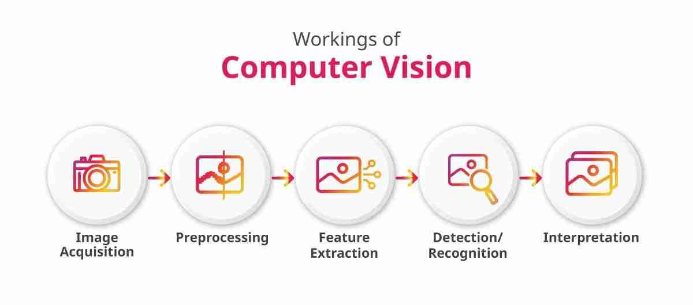

Pengenalan
Pengenalan tentang computer vision
Computer Vision atau visi komputer adalah bidang ilmu yang membuat komputer memperoleh pemahaman dari gambar dan video digital. Secara teknis, bidang ini berusaha mengotomatiskan pekerjaan yang biasa dilakukan oleh penglihatan manusia.
Manusia mengenali wajah, rambu lalu lintas, atau tulisan hanya dengan sekali pandang. Komputer tidak punya kemampuan itu sejak awal, sehingga harus dilatih memakai banyak contoh gambar. Setelah terlatih, komputer dapat mengenali objek yang belum pernah ia lihat sebelumnya.

Mata Robot di Kebun Tomat
Gambar ini menunjukkan contoh deteksi objek (object detection) dalam bidang pertanian cerdas. Sebuah lengan robot bekerja di dalam rumah kaca, dan kameranya menganalisis gambar tanaman tomat secara langsung.
Setiap tomat yang ditemukan model diberi kotak pembatas (bounding box) berwarna kuning. Di atas kotak itu ada label “Ripe Tomato” (tomat matang) dan skor keyakinan (confidence score) dalam rentang 0 sampai 1. Misalnya, angka 0,984 berarti model 98,4 persen yakin objek itu adalah tomat matang. Pada gambar ini ada lima tomat matang yang terdeteksi, dengan skor antara 0,972 dan 0,984.
Sejarah Singkat
Perjalanan computer vision berlangsung lebih dari enam dekade. Awalnya para peneliti mengira masalah ini mudah, tetapi ternyata penglihatan adalah salah satu pekerjaan tersulit bagi komputer.
- 1966 Seymour Papert di MIT meluncurkan Summer Vision Project. Waktu itu diyakini komputer bisa diajari mendeskripsikan apa yang dilihatnya dalam satu proyek musim panas. Ternyata masalahnya jauh lebih sulit.
- 1970-an Lahir dasar algoritma seperti deteksi tepi dan optical flow. Kunihiko Fukushima memperkenalkan Neocognitron, cikal bakal jaringan konvolusi (CNN).
- 1980-an Penelitian lebih matematis, misalnya model kontur (snake) dan analisis scale-space.
- 1990-an Berkembang rekonstruksi 3D, kalibrasi kamera, segmentasi citra, dan pengenalan wajah statistik pertama (Eigenface).
- 1998 Yann LeCun dan rekan mengembangkan LeNet, CNN yang membaca angka tulisan tangan.
- 2009 Dataset ImageNet dirilis. Jutaan gambar berlabel menjadi bahan latihan dan tolok ukur.
- 2012 AlexNet memenangkan kompetisi ImageNet jauh di depan metode lama dan memicu ledakan deep learning.
- 2015-2016 Deteksi objek real-time seperti YOLO menjadi praktis dipakai.
- 2020 Vision Transformer menunjukkan bahwa arsitektur di luar CNN juga mampu memahami gambar.
Cara kerja
Alur umumnya:
- Akuisisi citra: gambar atau video diambil dari kamera, ponsel, CCTV, atau pemindai medis.
- Pra-pemrosesan: gambar dibersihkan, misalnya mengurangi derau, menyesuaikan ukuran, dan mengatur kontras.
- Ekstraksi fitur: sistem menemukan ciri penting seperti tepi, sudut, tekstur, dan bentuk. Pada deep learning, tahap ini dipelajari model secara otomatis.
- Pelatihan model: model (umumnya CNN) dilatih dengan banyak gambar berlabel.
- Prediksi dan keputusan: model menghasilkan keluaran, misalnya label objek, kotak lokasi objek, atau tindakan lanjutan.

Tugas utama computer vision:
Computer vision mencakup beberapa jenis tugas. Perbedaannya terletak pada pertanyaan yang ingin dijawab komputer tentang sebuah gambar.
| Tugas | Pertanyaan yang dijawab | Contoh penggunaan |
|---|---|---|
| Klasifikasi gambar | Ini gambar apa? | Memisahkan foto kucing dan anjing |
| Deteksi objek | Apa saja objeknya dan di mana? | Mendeteksi kendaraan pada CCTV |
| Segmentasi | Piksel mana milik objek apa? | Menandai area tumor pada citra medis |
| OCR | Apa tulisan di gambar ini? | Membaca plat nomor kendaraan |
| Pelacakan | Ke mana objek bergerak? | Menghitung orang yang melewati pintu |
Penerapan
Computer vision sudah hadir di banyak aplikasi sehari-hari, sering kali tanpa kita sadari. Beberapa bidang yang paling terasa manfaatnya:
Kesehatan
- Membantu dokter membaca foto rontgen dan CT scan.
- Menandai area yang dicurigai sebagai tumor.
- Mengukur ukuran organ dan aliran darah dari citra.
Transportasi
- Mobil otonom mengenali jalur, rambu, dan pejalan kaki.
- Tilang elektronik (ETLE) dan pengukuran kecepatan kendaraan dari video.
- Sistem peringatan bila pengemudi mulai mengantuk.
Industri dan pertanian
- Inspeksi cacat produk di jalur produksi secara otomatis.
- Memandu robot untuk mengambil dan memilah barang.
- Memantau tanaman dan mendeteksi penyakit pada daun.
Di kehidupan sehari-hari, computer vision juga bekerja di balik pembukaan kunci ponsel dengan wajah, filter kamera, augmented reality, dan pencarian produk lewat foto.
Tantangan dan Etika
Meski kemampuannya terus meningkat, computer vision masih menghadapi beberapa kendala:
- Kondisi dunia nyata. Perubahan cahaya, sudut pandang, atau objek yang tertutup dapat membingungkan model.
- Kebutuhan data. Model perlu banyak gambar berlabel, dan pelabelannya memakan waktu serta biaya.
- Bias. Bila data latih kurang beragam, hasil model bisa tidak adil bagi kelompok tertentu.
- Privasi. Pengenalan wajah dan pengawasan massal menimbulkan kekhawatiran tentang pengumpulan data pribadi.
Karena itu, penggunaan computer vision perlu disertai pengujian yang cermat, transparansi, dan pertimbangan etika.
Referensi
Berikut ini adalah sumber dan referensi: